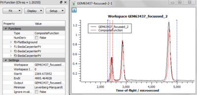
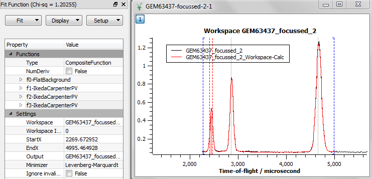
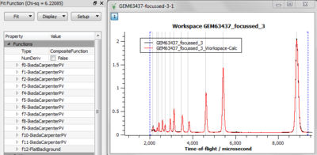

Exercises¶
Exercise 1¶
In this exercise we will fit a simple Gaussian on a linear background.
Start with loading the data set (GEM38370_Focussed).
Plot spectrum 4.
Zoom into the peak around 5 angstroms.
Start the fitting tool.
Adjust the fitting range if needed.
Make sure the fitting model is empty in the Fit Function browser. If necessary clear it.
Add a background function. Select LinearBackground.
Add a peak. Select Gaussian.
Click at peak’s maximum point to set initial values for the centre and the height.
Adjust the width.
Run Fit.
{kind=link}
{kind=link}
{kind=link}
{kind=link}
{kind=link}
Exercise 2¶
This exercise will mainly quiz about fitting.
Ensure that the Fit Function panel is clear using panel option Setup->’Clear model’
Load the GEM63437_focussed.nxs data. Note the workspace created is a WorkspaceGroup. This is simply a containing workspace grouping one of more other workspaces. This dataset has been proceed already with Mantid. How many algorithms have been applied to this processed dataset?
Plot the spectrum in GEM63437_focussed_2, and zoom in on the area of the three peaks
Associate the plot with the Fit Function panel and set fitting range to be between approximately 2270 and 5000 microseconds
Right click on plot and select Add background… then FlatBackground
Right click on plot and add peak IkedaCarpenterPV. This is peak function where some parameters of the peak function may be related to instrument geometry. As of this writing scientist(s) of the GEM instrument modified the file MantidInstall/instrument/GEM_Parameters.xml such that when you added the IkedaCarpenterPV peak it automatically selected some sensible starting parameter values. This is evident from the starting guess of the peak width but also by inspecting this function in the Fit Function panel
Hold down shift key and click on top of the two other peaks
Plot (fitting) guess and what you should see is something similar to
 where the red line is the guess
Remove plot guess
Fit the data with the model, where the output should be something similar to
 where the red line is here the fit
clear the model
Plot the spectrum in GEM63437_focussed_3
Using the same background and peak fitting function as above fit the region between about 2000 and 9400 microseconds, and obtain a result similar to
 Note this will take a while as it is a fit with almost 40 independent parameters to optimise.
Optionally using a similar approach try to fit the spectrum in for example GEM63437_focussed_5
{kind=link}
{kind=link}
{kind=link}
Exercise 3¶
Load the MUSR00015189 data set.
Plot a spectrum.
Start the fitting interface.
Follow the steps described earlier to add and set up a user defined function (UserFunction).
Define a function with Formula = h*exp(-a*x)
Fit the data.